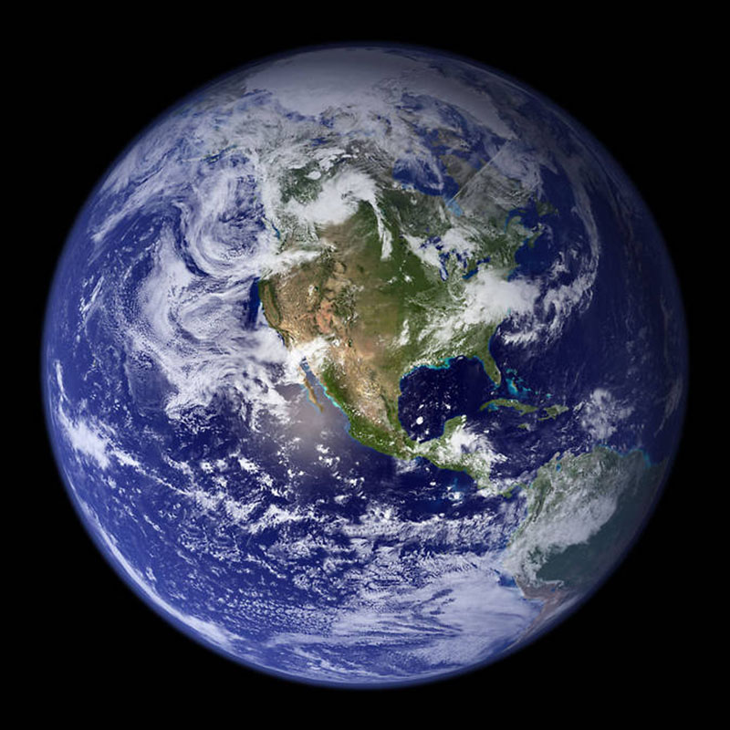
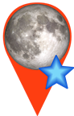

Earth analog explorer
Alians.
Find the Moon and
Mars on Earth.
Explore ten places on our planet that share features with the Moon or Mars, from volcanic fields to salt flats. See what they can teach us before we go.

 Moon
Moon Mars
MarsExplore the map
Select a pin to compare an Earth site with the Moon or Mars.

10 sites shown

Team candidate NASA reference
NASA referenceDrag to pan. Use + and − to zoom. With the map focused, use the arrow keys to pan.
Map imagery NASA Blue Marble · Sentinel-2 cloudless by EOX IT Services GmbH (contains modified Copernicus Sentinel data 2016, CC BY 4.0) · Landsat Image Mosaic of Antarctica
Why Earth analogs?
A lava field can help a crew practice navigating rough lunar terrain. A dry salt flat can help scientists work out how to recognize traces of ancient water on Mars. Each site is useful for a different kind of fieldwork.
Alians compares six team candidates and four NASA reference sites. Use the research profiles to see how the same place scores for different fieldwork. Each site card shows the observations, feature ratings, and weights used in that comparison.
NASA Planetary Analog Explorer ↗How we used AI
OpenAI Codex generated the website code, logo, interface graphics and draft text from the Alians team’s brief. It also helped research and prepare the source images and implement the similarity model.
The team supplied the concept, candidate sites, marker artwork and research weights. Site photographs and satellite imagery carry their original source credits. The similarity percentages use NASA data and documented site features.
Space Apps AI guidance ↗